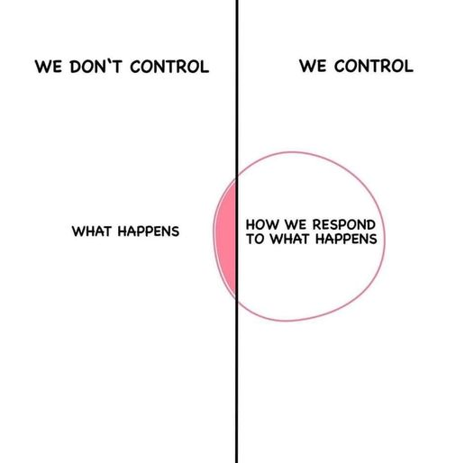

The Futility of Debate
2024-11-08

Colleges have debate teams that, like sports, follow strict rules.
The point of all debate is that the best evidence-based argument wins.
Unfortunately, people who attempt to debate me do not listen, respect me, or follow the rules.
They irrationally take my disagreement with their worldview as a challenge.
I am not a representative of any group or ideology. Nor am I challenging anyone on any topic. Nothing I say will make them stop trying to debate me. My only option is to stop interacting with them.
In my experience, I've never had a rational conversation with an irrational person.
Their goal in debating me is to be right, which they assume makes them superior and dominant.
Basic Debate Rules
The person who makes a claim about a topic must back up that claim with verifiable evidence. They cannot push the burden of proof onto others.
Nor can they move the goalposts, misdirect the focus from the claim to another topic, attack the appearance or character of a person, or appeal to emotion. Those are logical fallacies and a violation of debate rules.
All claims without evidence immediately fail the test. The person who made those claims loses the debate.
Disagreement or disbelief in a stated claim is not itself a claim. It is a refutation of a claim without sufficient evidence. Again the burden of proof is on the person making a claim.
The Breakdown of Reason
Most people lack training in critical thinking. They operate from a narrow emotional self-centered perspective. When faced with life challenges beyond their control they devolve into playing the blame game to absolve themselves of responsibility for their choices and to regain a feeling of agency.

A Common Pattern of Maladapted Behavior
- They complain about their situation and how it shouldn't exist. Some will claim, without evidence, to be persecuted.
- They offer unverified claims about the problems with people and society at large.
- They make pronouncements about how they think people and society should be.
- That quickly turns into judgments on people in society and their overall mindset, worldview, and motivation.
- Leading into Proselytization for their specific belief system, and it's requirements, as an antidote to the root of the problem as they perceive it.
This is a set of irrational logical fallacies crafted to give the person making the claims a sense of superiority, over a chaotic and uncontrollable world.
Of course, in this situation, they are directing all of this at me, because I don't share their worldview. Consciously or unconsciously they want to convert me to their way of thinking to gain a "Win" for their team.
Why I Don't Participate in Religious Debates
Debating devout religious people is like trying to play chess with a pigeon. The pigeon will knock over the pieces, crap on the board, and walk away like it won.
There is no bridge between faith and reason. Those who "believe" without evidence were convinced through emotion and logical fallacies. They pretend to know things they cannot know.
I'm skeptical and trained in critical thinking. I will never accept emotion-based arguments laced with logical fallacies that lack sufficient evidence.
I am open to verifiable evidence but the devout are not. Nor are they capable of providing anything beyond the Bible, which itself is a set of false claims and logical fallacies. They will not accept anything that conflicts with their dogmatic belief system that makes them feel superior.
This creates an unresolvable conflict of worldviews between us.
They want so badly to prove their version of reality is correct. They annoy me with their endless attempts to debate me until I end friendships. So far I've had to end a dozen friendships because of this exact pattern of behavior.
For over 20 years people have attempted to debate me with illogical arguments and it has never worked. I am beyond tired of them wasting my time trying.
Going forward, I will not tolerate any form of direct or indirect debates that lead to Proselytization. I'm calling out everyone who behaves this way toward me. If your response to this post is anything other than, "I'm sorry I won't do that anymore". Then we are no longer friends.
I've made it crystal clear that I do not like debating any topics, especially religion. If you feel a need to debate, find a group on Reddit, a Meetup near you, or some place with people who think like you.
I have other things to do and I refuse to waste my time playing this game.